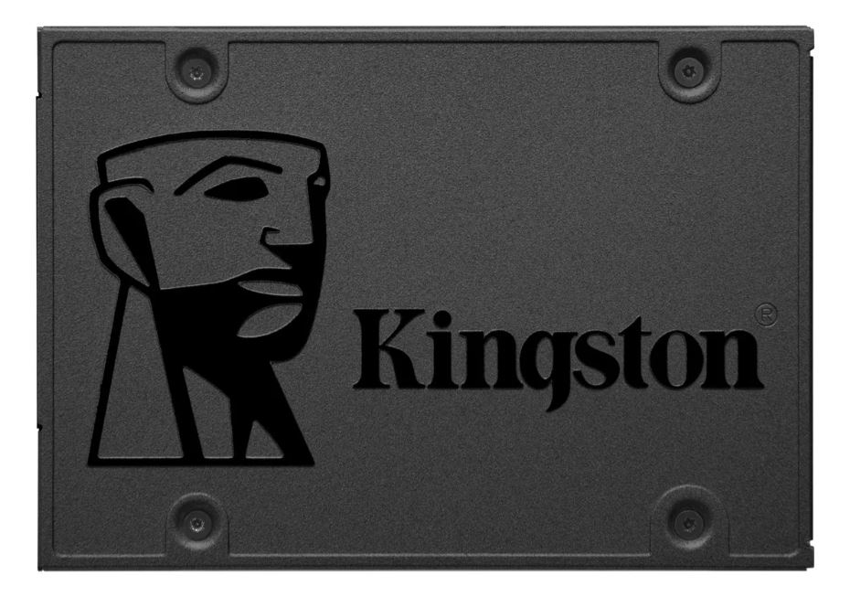

Guía para emsamblar o armar tu PC
"Si mi presupuesto es lo justo para comprar, ¿puedo conseguir una PC donde realmente pueda jugar?"
Hay demasiados factores a considerar para tal pregunta, pero si no te importa dedicar tiempo a ello, ensamblarla tú mismo es definitivamente más rentable que comprar una PC terminada. Hoy, te recomendaremos la versión de PC más adecuada y asequible del mercado y te explicaremos cómo ensamblar la computadora tú mismo.
Si deseas ensamblar tu propia PC para juegos, primero debes conocer la lista de piezas que necesitas comprar. Las partes necesarias incluyen:
- Gabinete
- Fuente de alimentación
- Placa Madre
Microprocesadoró CPU- Memoria RAM
- Disco Duro ó Disco Solido
- Placa de Video
- Enfriador de CPU (Opcional)
La razón principal por la que el enfriador de CPU se incluye aquí es que la CPU viene con un ventilador, por lo que no es una necesidad. Sin embargo, si se trata de una carga de juego grande, se recomienda comprar un enfriador de CPU con una mejor capacidad de enfriamiento o un enfriador de CPU más grande para controlar la temperatura de la CPU y evitar el sobrecalentamiento o fallas durante el juego.
Placa Madre
La Placa Madre Asus Prime B460m-a S1200 es sin duda una pieza fundamental para las PC's de hoy en día con un precio de $20390.
Viene con 2 ranuras para meter 2 Memorias RAM. Esta placa es compatible con i3 10100, 10100F, 10100T, 10105, 10105F, 10105T, 10300,
10300T, 10305, 10305T, 10320, 10325, etc. Conocerla en general te sera de gran ayuda a la hora de intentar decidirte por una.
Microprocesador
El Microprocesador Intel Core i3-10100F será una de las mejores opciones sobre todo por su potencia y precio accesible $20530.
Este i3-10100F ofrece 4 núcleos y 8 hilos. Tiene una frecuencia mínima de reloj de 3.6 GHz y una frecuencia máxima de 4.3 GHz, admite
memoria nativa de 3200MHz y es compatible con SSD PCIe 4.0. La capacidad máxima de expansión de RAM es de 128 gb.
Memoria RAM
Para mantener el presupuesto bajo control, intenta evitar componentes que tengan iluminación RGB. Sin embargo, dado que es una PC
para juegos, la memoria también debe ser de estilo de juego. La Memoria RAM Fury Beast DDR4 RGB de 8GB de RAM Kingston es la opcion
mas barata con precio de $14000 que la podes insertar en la ranuras de la Placa Madre.
Disco SSD ó Unidad de Estado Sólido

Hay algunos consejos sobre cómo elegir un SSD. Como queremos tener suficiente velocidad y capacidad manteniendo mi presupuesto bajo
control, elegimos un SSD Kingston SA400S37/960G de 960GB, por lo que el procesamiento de lectura/escritura y el almacenamiento de
datos se almacena en el SSD para evitar la compra de HDD lentos.
Placa de Video
La placa de video Nvidia Evga SC Gaming GeForce GTX 1660 SUPER es una verdadera bestia. Aunque el rendimiento no es comparable
a la especificación ultra alta, pero supera el presupuesto de RTX 3080, RTX 2080Ti, etc., la 1660 Super sigue siendo la mejor opción en
términos de calidad Full HD.
Partes Restantes (fuente de alimentación, gabinete, enfriador de CPU)
Entre las partes restantes, debes prestar atención a que el uso de una fuente de alimentación de un fabricante importante con una mejor
garantía, como el duradero CoolerMaster, reducirá la posibilidad de que se queme. La potencia debe ser suficiente para soportar el
funcionamiento normal de la PC. En términos generales, se recomienda elegir una fuente de alimentación de más de 650W para una compilación
de PC con una tarjeta gráfica discreta. El gabinete y el enfriador de la CPU son básicamente los mismos siempre que sean compatibles.